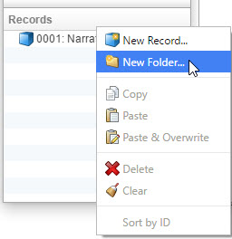
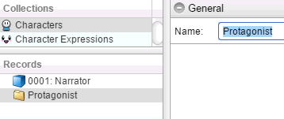
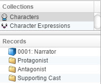
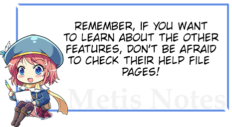
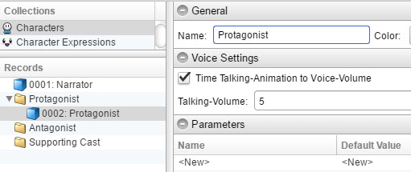
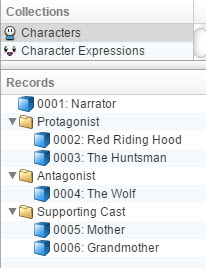
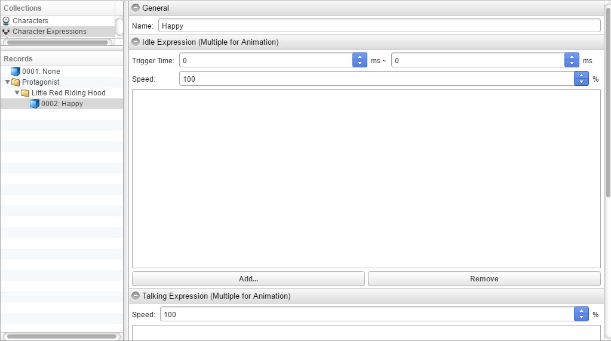
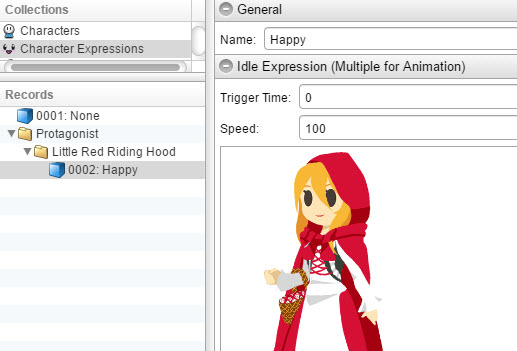
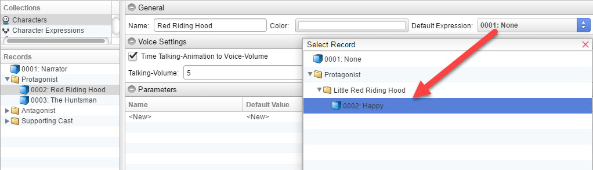
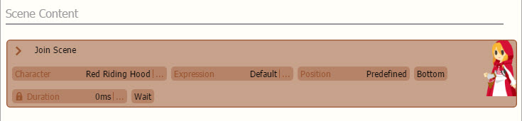

添加角色和表情
在这一部分，我们将教你如何在视觉小说制作器中添加角色！

创建文件夹



创建角色


创建角色表情
使用表情导入器
如果你希望使用自动导入工具。只需阅读表情导入器页面。
手动添加表情
如果你想手动添加表情，这个过程与添加角色类似。


继续为所有角色执行这些步骤！这样您将设置好所有角色的表情！
额外功能：为您的角色设置缩略图
作为一个巧妙的方式来显示当前场景中的角色，请返回Characters页面。

